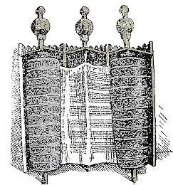

REMOVAL OF THE TORAH FROM THE ARK
NO OTHER GOD EQUAL YOU, MY LORD. YOUR MIRACLE1 BEYOND OTHER. YOUR KINGDOM2 LONG-LONG-AGO3 FOREVER, PLUS CONTINUE FROM-NOW-ON FOREVER. NOW LORD RULE LIKE KING. BEFORE LORD RULE. FUTURE LORD RULE TOO. STRONG, LORD GIFT-TO"each"4 HIS PEOPLE. LORD BLESS HIS PEOPLE HAVE PEACE.
HEAVENLY-FATHER5 HAVE-MERCY-ON-us US. IF WILLING, DO GOOD FOR MOUNTAIN Z-I-O-N. JERUSALEM6 ITS WALL, BUILD AGAIN. WHY? WE TRUST YOU ONLY, KING, GOD, ADVANCED7 RAISE-UP8, MASTER CONTROL WORLD GENERAL.
BEFORE JEWISH PEOPLE GROUP-WANDER9 DESERT. HAVE A-R-K GOLD BOX, GOLD (2h)F-CL'staves perpendicular to body'10. PEOPLE FOUR (2h)1-CL'@ each corner' (2h)S-CL'bear on shoulder' CARRY'forward'11. EACH TIME JEWISH PEOPLE GROUP-MOVE-FORWARD12, MOSES12A SAY, LORD, YOUR ENEMY, FORCE-ctr SCATTER. IF THEY-ctr HATE GOD, HE FORCE-ctr ESCAPE"each". TORAH13 ITS+ TEMPLE SHOW"all" WORLD. HIS LAW, JERUSALEM TEACH"each". PRAISE HIM GIVE TORAH HIS JEWISH PEOPLE, ITSELF HOLY.
Omit this if the Festival falls on Sabbath.
(Recited 3 times) YOU LORD, YOU LORD, GOD MERCY-ON-us SEND GRACE. EASY BLOW-TOP14 NOT. HIS KINDNESS, HIS TRUTH OVERFLOW. HIS KINDNESS PASS-DOWN ONE-THOSAND GENERATION. WE alt.MAKE-MISTAKE, SIN, OFF-POINT-TO-lf-AND-rt15, HE FORGIVE, FORGIVE. (CONTINUE PRAY QUIET)16...
(Recited 3 times) HAPPEN ME PRAY, HOPE YOU LORD WILLING ACCEPT. KNOW-THAT GOD KINDNESS BEYOND US UNDERSTAND, PLEASE ANSWER, PLEASE ANSWER, TRUE~BIZ17 SAVE US.
(CONTINUE PRAY QUIET)...
ME TRUST HIM, PLUS PRAISE HIS NAME (<) HOLY, (>) HAVE GLORY18. PLEASE WILLING MAKE MY HEART OPEN ACCEPT TORAH PLUS ANSWER PRAYER ME EXPRESS AND (2h)#ALL19 YOUR JEWISH PEOPLE EXPRESS FOR GOOD, FOR LIFE, FOR PEACE. AMEN.
The Torah is removed from the Ark and presented to the reader, who accepts it in his right arm. Facing the congregation the reader raises the Torah and, followed by congregation, recites:
(Reader, then cong.) JEWISH PEOPLE, ATTEND-TO-me20, KNOW-THAT21 LORD HIMSELF OUR GOD. LORD, ONLY-ONE22.
(Reader, then cong.) ONLY-ONE* OUR GOD. WONDERFUL* OUR MASTER. HOLY HIS NAME.
(Reader only) ANNOUNCE LORD WONDERFUL* WITH ME, PLUS HIS NAME WE RECOGNIZE TOGETHER.
Reader. WE PRAISE YOU. WHY? TORAH, YOU GIVE-us US JEWISH, YOUR SPECIAL PEOPLE, HELP-us BECOME HOLY.
(1) STRENGTH, (2) BEAUTY, (3) NAME~SHINY23, (4) VICTORY, (5) CONTROL, #ALL-FIVE-ON-LIST24 YOURS, LORD. WHY? YOU (<) MAKE HEAVEN, (>) MAKE EARTH. POWER PLUS AUTHORITY YOURS, LORD. OUR GOD ADVANCED. ENTER HIS TEMPLE, BOW-DOWN-TO-God HERE EARTH, HIMSELF HOLY. LORD OUR GOD HOLY.
As the reader carries the Torah to the bimah the congregation recites silently: (CONTINUE PRAY QUIET)...
HEAVENLY-FATHER HAVE-MERCY-ON-us US. WE ACCEPT OUR RESPONSIBILITY. REMEMBER OUR FOREFATHERS25 AGREE~RELATED-TO-God. SUDDEN-WRONG26 BAD HAPPEN, SAVE OUR SOUL. DON'T ALLOW TEMPTATION CONQUER-us US. HELP US NOT FOCUS TOO-MUCH THIS WORLD. INSTEAD MAKE OUR CHARACTER TEND MERCY-ON"each", HELP"all", DO RIGHT*.
The scroll being placed upon the reading desk, the Reader says:
PLEASE GOD HELP, PROTECT, SAVE PEOPLE THEMSELVES TRUST YOU. #ALL-OF-YOU27 SAY, AMEN. ANNOUNCE OUR GOD HIMSELF WONDERFUL* PLUS RESPECT TORAH MUST. COHEN28 PLEASE COME-ON29 BLESS TORAH (fingerspell name of Cohen or sign REPLACE COHEN.) WE PRAISE GOD WHY? TORAH, HE GIFT-TO JEWISH PEOPLE. FOR-FOR? BECOME HOLY.
Cong. IF (2h)YOU CHERISH LORD YOUR GOD, LIVE RIGHT WILL.
Those honored by being called up to the Torah recite the following blessing:
ADMIT-TO LORD, WE NEED PRAISE HIM.
Congregation: WE WILL PRAISE LORD FROM-NOW-ON FOREVER.
The person called to the Torah repeats the response and continues:
WE PRAISE YOU LORD OUR GOD. YOURSELF RULE WORLD~GENERAL IDEA~LIKE30 KING. COUNTRY VARIOUS, YOU PICK US. GIVE-us TORAH. WE PRAISE. WHY? YOU GIVE-us TORAH.
After reading a section of the Torah the following blessing is said:
WE PRAISE YOU LORD OUR GOD. YOURSELF RULE WORLD~GENERAL IDEA~LIKE KING. YOU TEACH-us WAY LIVE RIGHT*. OUR PEOPLE CONTINUE FOREVER CAN. WE PRAISE. WHY? YOU GIVE-us TORAH.
After the Torah is read, it is raised and the Congregation responds:
LORD COMMAND-lf MOSES TEACH-rt JEWISH PEOPLE TORAH, HAND-DOWN'bit by bit'. TORAH IDEA~LIKE TREE. (<) alt.C-CL'pick fruit from rt and eat'31 LIVE TAKE-OFF, (>) ITS-rt BLOSSOM32, BEAUTIFUL, SATISFIED. IF WE FOLLOW HIS LAW, LIVE SMOOTH, PEACE. PLUS LIVE LONG, BECOME RICH, PEOPLE HONOR-us US WILL. LORD REALLY-WANT33 US REALIZE MORE-AND-MORE34 (<) TORAH RIGHT*, (>) AUTHORITY CLEAR.
The blessing before the Haftarah
WE PRAISE ADONAI OUR GOD, KING UNIVERSE. WHY? YOU alt.PICK PROPHET TRUST CAN. PROPHET INFORM"all" TRUTH, YOU CHERISH. WE PRAISE YOU LORD. (1-OF-4)35 TORAH, (2-OF-4) MOSES, (3-OF-4) JEWISH PEOPLE, (4-OF-4) PROPHET, (<) SPEAK TRUTH, (>) RIGHT*. INDEX-LIST-OF-4, YOU CHERISH.
Concluding blessing for the Haftarah
WE PRAISE ADONAI OUR GOD, KING UNIVERSE.WHY? YOU FOUNDATION36 FOREVER. PEOPLE PASS-DOWN, WILLING HELP"each" YOU. IF YOU PROMISE, WE TRUST YOU SUCCEED. GOD COMMAND, CAUSE HAPPEN. EVERYTHING HE SAY (<) TRUE~BIZ, (>) RIGHT*. YOU PROMISE, WE TRUST YOU PROCEED DO. APPROPRIATE TRUST GOD. KING HAVE-MERCY-us WILL. LORD, WE PRAISE YOU. WHY? EVERYTHING YOU SAY, WE TRUST CAN.
MOUNTAIN Z-I-O-N THEREABOUTS-ctr HOME FOR OUR SPIRIT, PLEASE HAVE-MERCY-ctr. BEFORE37 ENEMY DESTROY TEMPLE, JERUSALEM MOURN. PLEASE SAVE DURING OUR LIFE TIME-PERIOD. WE PRAISE YOU. WHY? SOON TEMPLE SET-UP AGAIN, JEWISH PEOPLE CELEBRATE.
ELIJAH38, YOUR SERVANT, FORETELL39 JERUSALEM (<) SAVE, (>) HAVE PEACE. WE HAPPY. PLEASE SET-UP KING ANOINTED40 LIKE KING-DAVID41 AGAIN, INSPIRED. PERSON WRONG SIT THRONE42 TAKE-UP CONTROL NAME~SHINY LIKE KING, GOD FORBID. WHY? YOU SWEAR43 KING AUTHORITY PASS-DOWN. END, NEVER. LORD, WE PRAISE YOU. WHY? YOU PROTECT KING.
All the text in grey from here to end is for the Sabbath, unless otherwise stated.
LORD OUR GOD, WE (<) THANK, (>) PRAISE. FOR-FOR? (1) TORAH, (2) WAY WE WORSHIP, (3) PROPHET INDEX-LIST, (4) TODAY SABBATH PLUS
On Shavuot: HOLIDAY SHAVUOT45,
On Sukkot: HOLIDAY SUKKOT46,
On Shemini Atzeret and Simchat Torah: HOLIDAY EIGHTH DAY ASSEMBLE47,
WE REQUEST HEAVEN PLEASE SAVE US. (CONTINUE PRAY QUIET)...
OUR FOREFATHERS, YOU BLESS. PEOPLE ASSEMBLE HERE, PLEASE BLESS SAME. PLUS OTHER GROUP++@rt WORSHIP YOU. (1) THEY-rt, (2) THEIR-rt WIFE, (3) THEIR (<) SON, (>) DAUGHTER, PLEASE BLESS #ALL-THREE-ON-LIST. PLUS (1) PEOPLE (<) SET-UP, (>) SUPPORT SYNAGOGUE48, (2) PEOPLE ENTER PRAY, (3) HELP"each" POOR, (4) SUPERVISE JEWISH COMMUNITY, (5) MONEY SEND++ ISRAEL. WE PRAISE YOU, YOURSELF HOLY. WHY? (<) PEOPLE SICK'over time', (>) YOU HELP-lf HEAL. (<) THEY-lf alt.WRONG, (>) YOU EXCUSE-lf. (<) THEY-lf WORK, (>) YOU BLESS-lf, SUCCCEED WILL. WE REALLY-WANT FOR (2h)#ALL JEWISH PEOPLE. #ALL-OF-YOU SAY, AMEN.
WE REQUEST HEAVEN PLEASE SAVE US. (CONTINUE PRAY QUIET)...
On the Sabbath preceding Rosh Chodesh, a special blessing for the new month is recited. The reader stands at the bimah and he or a congregant next to him holds the Torah Scroll.
(CONTINUE PRAY QUIET)...
HOPE HEAVEN HELP-us (CONTINUE PRAY QUIET)... WILLING, LORD OUR GOD AND GOD FOR OUR FOREFATHERS, THAT YOU CAUSE NEW MONTH FOR OUR GOOD AND FOR BLESSING. HOPE YOU GIFT-TO-us US LONG LIFE, (<) LIFE HAVE PEACE, (>) LIFE HAVE GOOD THINGS, (ignore the many Amen's) (<) LIFE HAVE BLESSING, (>) LIFE HAVE ENOUGH FOOD, (<) LIFE HAVE HEALTH, (>) LIFE WE BOW-DOWN HEAVEN PLUS AVOID SIN, LIFE WITHOUT (<) SHAME, (>) EMBARASSMENT, LIFE (<) RICH, (>) HAVE HONOR, LIFE WE LOVE TORAH PLUS BOW-DOWN HEAVEN, LIFE WE BEG YOU GO-AHEAD FOR OUR GOOD. AMEN, S-E-L-A-H.
The congregation is informed of the timing of the new moon, they pray quietly, and then the reader continues.
(CONTINUE PRAY QUIET)...
HE DO MIRACLE FOR OUR FOREFATHERS PLUS OPPRESSION-OFF49 JEWISH SLAVE BECOME FREE. REALLY-WANT OPPRESSION-OFF SOON. MEAN NORTH, SOUTH, EAST, WEST, ASSEMBLE WHERE? ISRAEL. #ALL-OF-US50 FRIEND'circles horizontally'51. #ALL-OF-YOU SAY, AMEN.
Reader, then congregation: NEW MONTH CALLED (fingerspell name of Jewish month) START NEXT-WEEK (sign day of the week this month starts). ITSELF BRING-TO-us GOOD FOR US AND FOR (2h)#ALL JEWISH PEOPLE.
Congregation, then reader: REALLY-WANT HE HOLY, PRAISE HIM, MAKE MONTH NEW FOR US PLUS (2h)#ALL HIS JEWISH PEOPLE, <<> FOR LIFE (>) FOR PEACE (AMEN), <<> FOR HAPPINESS (>) FOR THRILL (AMEN), <<> FOR SALVATION (>) FOR COMFORT. #ALL-OF-YOU SAY, AMEN.
HEAVENLY-FATHER HAVE-MERCY-ON-us US. (CONTINUE PRAY QUIET)...
PSALM52 SAY QUOTE GOD TAKE-REVENGE FOR BLOOD. HE REMEMBER US. HE FORGET HUMBLE CRY-OUT53 NOT. PSALM ALSO SAY QUOTE HE JUDGE MANY COUNTRY THEMSELVES WANT DESTROY US WILL. STRONG COUNTRY LEADER, HE CRUSH54. JEWISH PEOPLE AGAIN PROUD CAN.
WE SHOULD PRAISE THEM LIVE IN YOUR-God's HOUSE. (CONTINUE PRAY QUIET)...
ME ANNOUNCE REALLY-WANT PRAISE LORD PLUS (2h)#ALL PEOPLE PRAISE HIS HOLY NAME FOREVER FOREVER. WE PRAISE GOD FROM-NOW-ON FOREVER, HALLELUJAH.
The reader takes the Torah in his right arm and recites:
COME-ON PRAISE LORD HIS NAME. WHY? APPROPRIATE RECOGNIZE ONLY HIS NAME ADVANCED.
Congregation: HIS GLORY MORE-THAN (<) EARTH, (>) HEAVEN. PROUD HIS PEOPLE, GOD ADVANCED. MEAN THEY PEOPLE UPRIGHT PRAISE SHOULD. FOR JEWISH PEOPLE GENERAL, HIS SPECIAL PEOPLE, HALLELUJAH.
As the Torah is carried to the Ark, the congregation recites the following Psalm:
KING-DAVID HIS PSALM. LORD OWN EARTH AND EVERYTHING HERE. (CONTINUE PRAY QUIET)... (2h)#ALL GATE (2h)B-CL'drawgate rise' SHOULD. EVERY ENTRANCE OPEN-UP SHOULD. WHY? ALLOW KING GLORY ENTER. KING GLORY WHO? LORD RULE ANGEL SCADS-OF HIMSELF KING GLORY.
As the Torah is placed in to the Ark, the congregation recites:
FROM-TIME-TO-TIME HIS A-R-K GOLD (2h)B-CL'box', GOLD (2h)F-CL'staves perpendicular to signer's body' PUT-DOWN63. HAPPEN? (CONTINUE PRAY SILENT) . . . TORAH IDEA~LIKE TREE. (<) alt.C-CL'pick fruit from rt and eat' LIVE TAKE-OFF, (>) ITS-rt BLOSSOM, BEAUTIFUL, SATISFIED. IF WE FOLLOW HIS LAW, (<) LIVE SMOOTH, (>) HAVE PEACE WILL. LORD HELP-us US #BACK-TOGETHER-God64. WE WILLING. MAKE TODAY LIKE USED-TO-BE.
KADDISH
GOD HIS NAME~SHINY, HOLY*. PRAISE GOD. WE MUST ANNOUNCE HIS WORTH. SPREAD WORLD~THEREABOUTS HE HIMSELF MAKE.
HOPE DURING YOUR"all" LIFE TIME-PERIOD EVERYONE ACCEPT AUTHORITY HIS-GOD's, #ALL-OF-YOU SAY, AMEN.
Cong. HOPE HE CONTINUE BLESS US FROM-NOW-ON, FOREVER.
WE ANNOUNCE HE BLESS US. HIS NAME~SHINY, ADVANCED; WE PRAISE GOD. WE HONOR GOD. WE ADMIT HIS NAME HOLY. PRAISE GOD. WE REALIZE (1) ANNOUNCE, (2) HONOR, (3) PRAISE, INDEX-LIST-OF-3 NOT ENOUGH. #ALL-OF-YOU SAY, AMEN.
Continue with the Festival Mussaf (not yet glossed).
Footnotes
A. From http://www.jewish-holiday.com/awesome.html (Awesome), which is no longer extant.